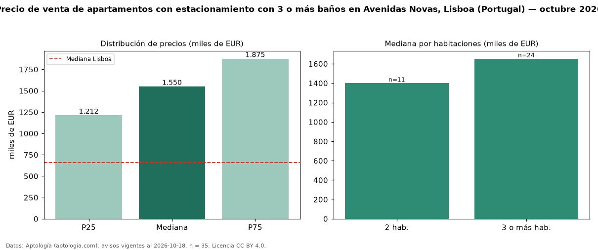

Precio de venta de apartamentos con estacionamiento con 3 o más baños en Avenidas Novas, Lisboa (Portugal) — octubre 2026
EUR 1,55 millones es el precio mediano de apartamentos con estacionamiento con 3 o más baños en venta en Avenidas Novas, Lisboa (Portugal) (n = 35 avisos). Frente a la mediana de los apartamentos con estacionamiento en venta de Avenidas Novas (EUR 1,18 millones, n = 63), queda 31 % por encima; este segmento reúne el 56 % de esos avisos. Por metro cuadrado, la mediana es EUR 10.032/m² (n = 34), 1 % por encima de los apartamentos con estacionamiento en venta de Avenidas Novas (EUR 9.923/m²). El área mediana anunciada es 137 m². El segmento con más oferta es el de 3 o más habitaciones (24 avisos, mediana EUR 1,65 millones); pasar de 2 habitaciones a 3 o más habitaciones cambia la mediana +18 %. La mediana de todos los apartamentos en venta de Lisboa es EUR 660.000 (+135 % de diferencia). La mitad central de los avisos va de EUR 1,21 millones a EUR 1,88 millones (razón 1,5), una dispersión moderada. Datos: Aptología (aptologia.com), CC BY 4.0 — https://www.aptologia.com/pt/venda/lisboa/avenidas-novas. Archivos: PDF, CSV con las cifras y gráfica PNG.

| Avisos únicos | 35 |
|---|---|
| Percentil 25 | COP 1.212.500 |
| Mediana | COP 1.550.000 |
| Percentil 75 | COP 1.875.000 |
| Mediana por m² | COP 10.032 |
Fuente: avisos vigentes de portales inmobiliarios recopilados por Aptología, deduplicados (mínimo 30 avisos únicos por celda). Precios pedidos, no cerrados. Fecha: 2026-10-18.